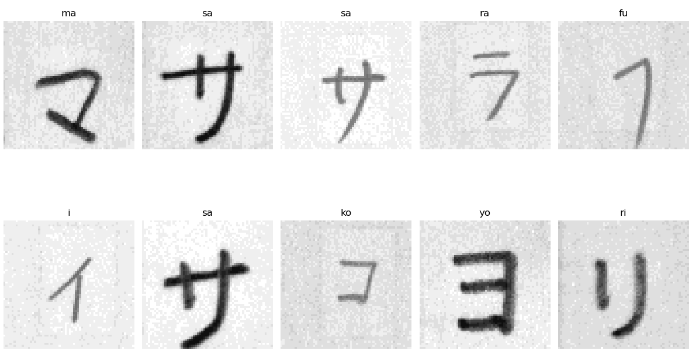
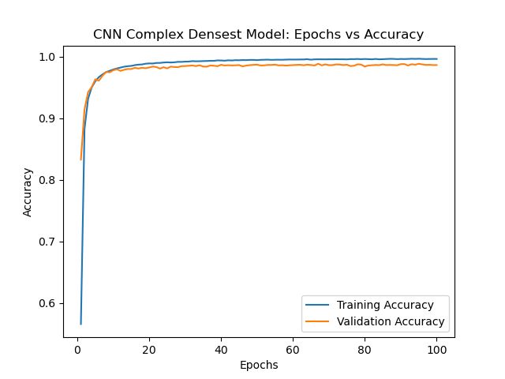

Katakana Classifier
Overview
This project explores the use of Convolution Neural Networks (CNN) to classify images of handwritten Japanese Katakana characters. Six different CNN models were used to classify the 46 main Katakana characters, exluding the characters with dakuten (゛) and handakuten (゜). The most accurate model achieved a testing accuracy of 99.15%. For a similar experiment, check out this report (1) by Charlie Tsai.
Problem and Motivation
During my trips to Japan, I would come across words I did could not comprehend, whether it was due to the lack of my vocabulary or I was unable to read the characters. I would then spend minutes trying to find the meaning of characters to then find out the meaning of the word. This project will lay the groundwork to be able to classify words using live input.
Dataset and Implementation
The datasets used were the ETL-1 and ETL-6 datasets from the ETL database (2) found here. The database contains 1.2 million greyscale images of handwritten and machine-generated hiragana, katakana, and kanji characters of various resolutions. The two datasets I used have around 2,800 images of each katakana character with the resolution of 63x64. Each dataset was in a different binary formats but, an image extractor was created by choo (3) which can be found here. A sample of the images can be seen below.
The images were sorted by their unicode and placed into their respective folders. A method to transform these folders into a dataset was created by Utkarsh Garg (4) which can be found here however, for my project, some modules were changed and some of the code was modified to better fit my design.
Models
For my CNN models, I used Pytorch and used Pytorch's nn's Sequential function to organize my models. I used the optimizer Adam with a learning rate of 0.0001 and the CrossEntropyLoss function for all of my models. All models trained were for 100 epochs except for the Basic model which trained for 40 epochs due to overfitting issues. With the exception of the final fully-connected layer, all fully-connected layers had a dropout rate of 50% while convolution layers had a dropout rate of 15% to prevent overfitting. Finally the activation functions for all the layers were ReLU with the exception of the output layer which used LogSoftMax.
Below I showcase a couple of my implementations:
Basic Model
| Layer | Activation Function | Dropout Rate |
|---|---|---|
| Conv2d(1,32,5) | ReLU | 0.15 |
| MaxPool2d(2) | ||
| Flatten() | ||
| Linear(27840,46) | LogSoftMax(dim=1) | 0.0 |
Densest Model
| Layer | Activation Function | Dropout Rate |
|---|---|---|
| Conv2d(1,32,5) | ReLU | 0.15 |
| MaxPool2d(2) | ||
| Conv2d(32,64,5) | ReLU | 0.15 |
| MaxPool2d(2) | ||
| Conv2d(64,128,5) | ReLU | 0.15 |
| MaxPool2d(2) | ||
| Flatten() | ||
| Linear(2048,512) | ReLU | 0.5 |
| Linear(512,128) | ReLU | 0.5 |
| Linear(128,46) | LogSoftMax(dim=1) | 0.0 |
Conv22 Model
| Layer | Activation Function | Dropout Rate |
|---|---|---|
| Conv2d(1,32,5) | ReLU | 0.15 |
| Conv2d(32,32,5) | ReLU | 0.15 |
| MaxPool2d(2) | ||
| Conv2d(32,64,5) | ReLU | 0.15 |
| Conv2d(64,64,5) | ReLU | 0.15 |
| MaxPool2d(2) | ||
| Flatten() | ||
| Linear(2048,512) | ReLU | 0.5 |
| Linear(512,128) | ReLU | 0.5 |
| Linear(128,46) | LogSoftMax(dim=1) | 0.0 |
For the next four models, more convolution and fully-connected layers were added with the largest model having 4 convolution layers and 3 fully-connected layers.
The last model was loosely based on Nouman's implementation of the LeNet-5 model (5) found here.
Results
To measure the accuracy of my models, I took the percentage, rounded to decimal places, of the amount of images the models correctly predicted, based on the label with the highest probablity, divided by the total amount of pictures viewed.
| Model Name | Training Accuracy | Validation Accuracy | Testing Accuracy |
|---|---|---|---|
| LeNet-5 | 92.41% | 91.25% | 92.62% |
| Basic | 99.85% | 92.33% | 94.57% |
| Complex | 97.51% | 95.72% | 96.60% |
| Complex Denser | 94.29% | 92.06% | 93.21% |
| Complex Densest | 99.64% | 98.65% | 99.09% |
| Conv22 | 99.63% | 98.55% | 99.16% |
Below is a graph of Complex Densest's relationship between epochs and accuracy.
Based on the testing accuracies, the amount of convolution layers play a larger role with the accuracy than the fully-connected as seen with the Complex Densest and Conv 2 models which had 3 and 4 convolution layers respectively. It appears that there is diminishing returns after the third convolution layers which brings up the trade-off between number of convolution layers and time when other methods of increasing accuracy exist such as hyperparameter tuning. Adding more fully-connected layers do not seem to add to the model's accuracy. The Complex and Complex Denser models are the same model with the Complex Denser model having an extra fully-connected layer. ## Final Thoughts and Project's Future
Going through the process of working on this project, I gained a better understanding of the use of CNNs and its strengths and weaknesses. While accuracy increases with more convolution layers, the training time also increases. Also, the resolution of the photos need to be constant to transition from a convolution layer to the fully-connected layer.
References
(1) Tsai, Charlie. Recognizing Handwritten Japanese Characters Using Deep Convolutional Neural Networks.
(2) National Institute of Advanced Industrial Science and Technology (AIST), and Japan Electronics and Information Technology Industries Association. “Etlcdb.” Etlcdb, etlcdb.db.aist.go.jp/. Accessed 13 Mar. 2022.
(3) choo. “ETLCDB Image Extractor.” GitHub, 16 July 2021, github.com/choo/etlcdb-image-extractor. Accessed 13 Mar. 2022.
(4) Garg, Utkarsh. “Custom Dataset in Pytorch —Part 1. Images.” Medium, 2 Oct. 2021, towardsdatascience.com/custom-dataset-in-pytorch-part-1-images-2df3152895. Accessed 13 Mar. 2022.
(5) Nouman. “Writing LeNet5 from Scratch in PyTorch.” Paperspace Blog, 9 Jan. 2022, blog.paperspace.com/writing-lenet5-from-scratch-in-python/. Accessed 13 Mar. 2022.